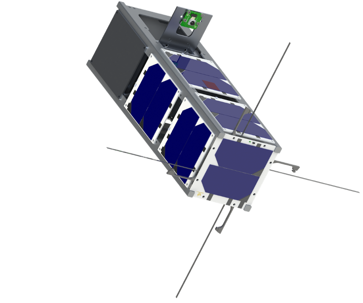

GASRATS

I am currently working as a Software Systems Engineer as part of an undergraduate student team at Utah State University
that works on developing satellites. Our current project is called GASRATS, for Get Away Special Radio and Antenna Transparency
Satellite.
My role on the team is to work on developing for a highly specialized embedded system environment. We utilize the F'
(pronounced F-Prime) framework developed by NASA's Jet Propulsion Laboratory in Pasadena, California. Our software
architecture is designed around having components are modular and contained. This allows us to narrow down issues and
reuse code more effectively.
Graphic Design
Although I am a Computer Engineering student, I also have a lot of interest in graphic design. Everything that you see on this
website was created by me from scratch. I wrote all of the HTML, CSS, and JavaScript in order for it to look exactly like I intended. I also worked on
the icons, utilizing Adobe Illustrator. In the past, I have even taught a class on Adobe Illustrator at my local community college.
You can find a more detailed account of my graphic design work
here.
ArKade Cabinet
This is my ArKade Cabinet. It is one of the first engineering projects I ever completed, and one of my best puns. It is powered by a Raspberry
Pi 3B, connected to a 720p display to show the graphics of whatever game is being played. The buttons are connected to a small microcontroller
that connects to the Pi over USB, and there is a USB keyboard installed in a hidden flap under the control board for redundancy. The Raspberry Pi
is running RetroPie, a skin a Raspbian, now Raspberry Pi OS, that has emulators of most retro systems pre-installed and accessible through a
simple graphical user interface. Because it is Linux, it is extremely customizable. That led to a countless number of hours spent tinkering with
themes and settings to get it to look and feel just how I wanted. I also created the wooden frame you can see housing the screen and controls. I
took a couple of pieces of plywood, former pieces of a closet's organizer, and cut them to size using a miter saw and jigsaw.